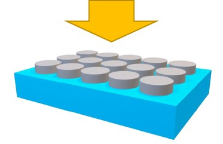

Welcome to MC_Grating_Python documentation!¶
MC_Grating_Python was written in order to interface python with MC Grating. This facilitates the creation of more complex geometries, optimizations and visualizations.
The code is in continous development. Currently it only works for the Crossed Grating codes.
Getting Started¶
Download the mc_grating_class to the directory from which you would like to run the python script.
First Simulation¶
This tutorial will teach you how to run your first MC Grating simulation through python. It will include defining your geometry, setting up the scan, and retreiveing as well as visualizing the result.
We will be simulating the reflection from a periodic nanostructure (2D grating). The nanostructure consists of silicon nano-discs on an oxide substrate.
Start by importing all necessary packages and python files (mc_grating_class):
# some standard python packages
import matplotlib.pyplot as plt
import numpy as np
# the python-MC Grating link
import mc_grating_class as mc
Define all the general simulation parameters:
# create mc_grating header
gen = mc.general(orders_x = 7,orders_y= 7, single_wavelength=560)
Create the geometry (and define materials used):
# geometry
geo = mc.geometry(period_x=237, period_y=237)
# Cover Layer
geo.cover_material("Air (Special Formula)")
# LAYER 1
geo.layer(thickness = 100, sourrounding_material = "Air (Special Formula)")
geo.circle(center = [0,0], radius = 50, material = "Silicon (Table)")
# Substrate
geo.substrate("Fused Silica (Sellmeier)")
let’s create a wavlength scan in the visible range from 400nm to 700nm:
# scan
scan = mc.scanning()
scan.setting_wavelength_scan(start_w=400, end_w=700, number_of_points=100)
First GDSII¶
Let’s create our first GDSII file:
import gdspy
# The GDSII file is called a library, which contains multiple cells.
lib = gdspy.GdsLibrary()
# Geometry must be placed in cells.
cell = lib.new_cell('FIRST')
# Create the geometry (a single rectangle) and add it to the cell.
rect = gdspy.Rectangle((0, 0), (2, 1))
cell.add(rect)
# Save the library in a file called 'first.gds'.
lib.write_gds('first.gds')
# Optionally, save an image of the cell as SVG.
cell.write_svg('first.svg')
# Display all cells using the internal viewer.
gdspy.LayoutViewer()
After importing the gdspy module, we create a library lib to hold the design.
Then a gdspy.Cell is created and the rectangle is added to the cell.
All shapes in the GDSII format exist inside cells.
A cell can be imagined as a piece of paper where the layout will be defined.
Later, the cells can be used to create a hierarchy of geometries, ass we’ll see in References.